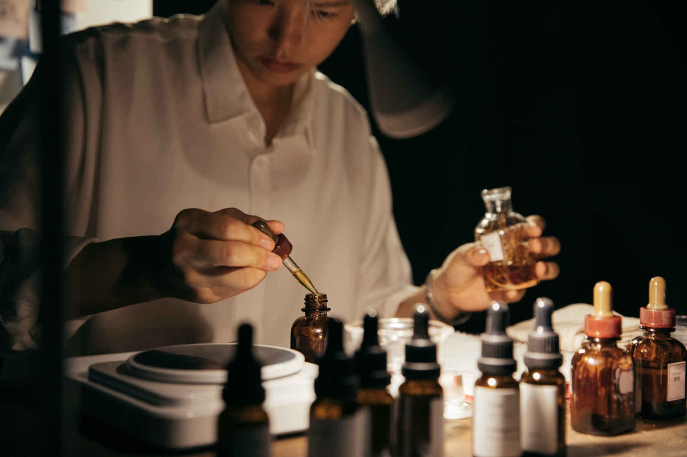

워크숍
At(tune)ment

프로그램 소개
코감응 — at(tune)ment는 냄새에 반응해 소리를 만들어보는 후각 기반 즉흥연주 실험 워크숍입니다.
참가자는 향을 맡고, 떠오르는 기억과 느낌, 신체적 반응을 하나의 음 또는 짧은 소절로 표현합니다. 같은 냄새도 사람과 향 사이의 거리, 개인의 기억과 감정, 그날의 상태에 따라 서로 다른 소리로 나타날 수 있습니다.
이 워크숍에는 정해진 답이 없습니다. 냄새가 각자의 몸을 통과하며 어떻게 다른 소리와 관계를 만들어내는지 함께 관찰하고 실험합니다.
Let’s Nose-Feel-Yes!
- 참여자
- 악기를 연주할 수 있는 연주 참가자 최대 5명과 관찰 참가자 최대 5명
- 신청 및 준비
- 신청폼을 통해 연주 참가자와 관찰 참가자를 모집합니다.
신청폼에는 참여 방식, 희망 날짜, 이름과 연락처, 향 알레르기 또는 민감성 여부, 기타 전달 사항을 기재합니다.
연주 참가자는 사용 악기, 전원 필요 여부, 필요한 장비도 알려주세요.
연주 참가자의 악기와 전원 사용 여부, 필요한 음향 장비 등을 사전에 확인하고, 참가 인원에 맞춰 개인 후각 감응용 냄새 샘플 키트와 기록지를 준비합니다. - 워크숍 전 준비
- 연주 참가자는 워크숍 시작 전에 미리 도착해 자신의 악기와 장비를 세팅합니다.
단계
단계
소개 및 방식 설명
후각에 감응하기
하나의 향을 맡고, 즉각적인 느낌뿐 아니라 떠오르는 기억이나 신체적 반응을 잠시 관찰합니다.
하나의 음 또는 짧은 소절로 응답하기
감각한 경험을 각자의 악기로 하나의 음 혹은 짧은 소절로 표현합니다.
3회 정도 반복하기
서로 다른 향 또는 후각적 상황을 경험하며, 냄새에 반응해 소리를 내는 과정을 몇 차례 반복합니다.
후각 반응 즉흥 합주
향의 변화에 반응하며 자유롭게 즉흥 합주를 진행합니다.
짧은 공유 및 마무리